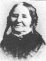
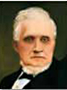
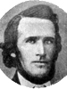
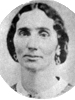

|
William Ballantyne
and Margaret Renwick |
----> |
|
David Ballantyne
Born 7 AUG 1748 Redpath,Earlston,Berwickshire,Scotland
Died 12 DEC 1831 Springhall,Kelso,Roxburghshire,Scotland
Ann Bannerman
Born OCT 1789 Kildonan,Sutherlandshire,Scotland
Died 11 OCT 1871 Salt Lake City,Salt Lake,Utah,USA
Married 28 OCT 1808 Of Earlston,Berwickshire,Scotland
David also married Cecelia Wallace 8 OCT 1799 Maxton,Roxburghshire,Scotland
|
|
Peter Bannerman
and Annie Matheson |
Children:
| * |
Ann Ballantyne
Born 7 AUG 1809 Earlston,Berwickshire,Scotland
Died 10 FEB 1819
The 1st child of David Ballantyne and Ann Bannerman
|
* |
Peter Ballantyne
Born 15 JUN 1811 Earlston,Berwickshire,Scotland
Died 12 SEP 1893
The 2nd child of David Ballantyne and Ann Bannerman
|
 |
Jane Ballantyne
Born 11 APR 1813 Shieldfield,In Earlston,Berwick,Scotland
Died 26 DEC 1900 Salt Lake City,Salt Lake,Utah,USA
Married
John Taylor 25 FEB 1844 Nauvoo,Hancock,Illinois,USA
The 3th child of David Ballantyne and Ann Bannerman
|
* |
Robert Ballantyne
Born 9 DEC 1815 Mertin,Kelso,Roxburg,Scotland
Died 20 MAR 1819
The 4th child of David Ballantyne and Ann Bannerman
|
123 |
Richard Ballantyne 
Born 26 AUG 1817 Whiteridgebog,Roxburghshire,Scotland
Died 8 NOV 1898 OGDEN,Weber,Utah,USA
Married
Huldah Meriah Clark  17 FEB 1847 Council Bluffs,Pottawattamie,Iowa,USA 17 FEB 1847 Council Bluffs,Pottawattamie,Iowa,USA
Married
Mary Pearce 27 NOV 1855 Salt Lake City,Salt Lake,Utah,USA
Married
Caroline Albertine Sanderson 6 MAR 1857 Endowment House,Salt Lake City,Salt Lake,Utah
The 5th child of David Ballantyne and Ann Bannerman
|
|
Annie Ballantyne
Born 2 SEP 1819 Whiteridgebog,Roxburghshire,Scotland
Died 16 MAR 1908
Married
Thomas Charles Hall 27 FEB 1857
The 6th child of David Ballantyne and Ann Bannerman
|
* |
James Ballantyne
Born 18 AUG 1822 Kelso,Roxburghshire,Scotland
Died 2 NOV 1833
The 7th child of David Ballantyne and Ann Bannerman
|